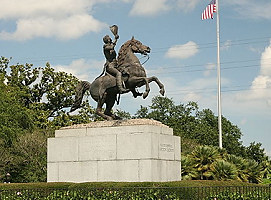
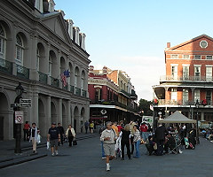
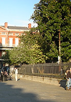
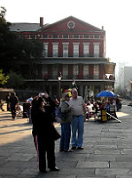
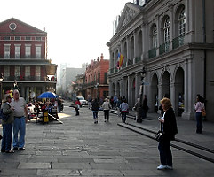
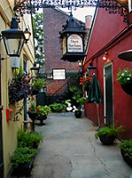
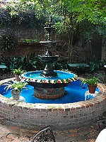
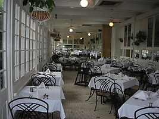
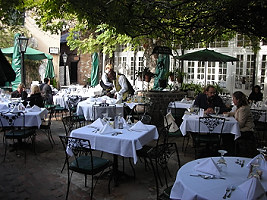

|

# The statue of General Andrew Jackson in Jackson Square. |

# Almost every day, Jackson Square attracts tourists. |

Lush vegetation even in November in Jackson Square. |
|

More vendors, artists, and musicians. |

And another view. Venders, artists, and tourists in Jackson Square. |

# Entrance to our favorite restaurant in New Orleans - Court of the Two Sisters. |
|

# Fountain in Court of Two Sisters. |

# Indoor seating is available. |

# Courtyard dining in the Court of the Two Sisters. |